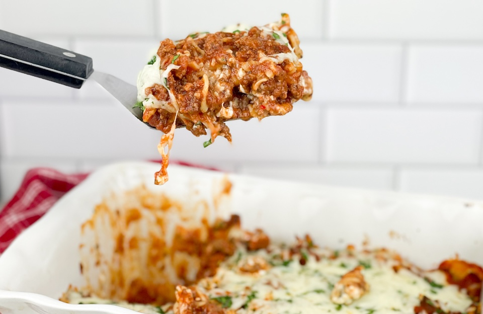

Protein Bomb Lasagna

About this recipe
This is a recipe I created while being on my high protein diet. Nonfat greek yoghurt and ground beef are both great for adding protein.
Be sure to make your own marinara sauce for the best taste, if you don't enjoy making your own marinara, you can use a brand
like Raos, I prefer Raos due to it's low sugar content. Every serving is 75 grams of Protein!
Ingredients
Ground Beef 32G protein per serving (8oz)
Canned tomatoes
Olive oil
Mozzarella cheese roll or shredded 8G protein per serving
Nonfat Greek Yoghurt 18G protein per serving
Banza Lasagna Noodles 20G protein per serving
2 eggs 8G protein per serving
Parmesean cheese
Salt
Pepper
2 tbl spoons Italian Seasoning (basil, oregano, thyme, marjorem, and rosemary)
Instructions
-
Cook the ground beef in a sauce pan until golden brown. Add seasoning and salt and pepper to taste. Add 2 cans of diced
tomatoes, along with tablespoons of olive oil. The type of tomatoes are your preference, I prefer diced versus tomato
sauce. This is now a bolognese sauce.
-
Preheat the oven to 425.
-
Add 3 quarts of water to stove pot and bring to boil, add noodles and boil for 5-6 minutes to get the noodles to
aldente
-
Once the noodles are done drain them and then blanch them in an ice water bath. This is important so the noodles firm
up and hold well together. This is the secret to a great lasagna recipe.
-
Get a 3-4 quart baking pan and latle one scoop of the bolognese sauce on the bottom of the pan. Add one layer of noodles
top of the sauce. Then latle another 2-3 scoops of bolognese sauce. Add I cup of ricota cheese. The ratios are as follows
and should give you 3 to 4 layers of noodles, sauce, and ricota.
-
You can then add the Mozzarella cheese to the very top layer. Get the kind that comes in a roll versus the shredded.
The roll form is the highest quality and has one less step of processing that the shredded version will have.
-
Place your delicous protein lasagna in the oven and bake for 40-45 minutes or until the top
layer of cheese is bubbling. I like to make sure the edges are a bit crisp!
-
Once your lasagna is done baking pull it out and let it rest for 10-15 minutes. If your like me, you will be
tempted to dive right into your wonderful lasagna, but it will not set properly until it has rested for 10-15
minutes. Sprinkle with fresh basil pieces on top for a beautiful garnish.